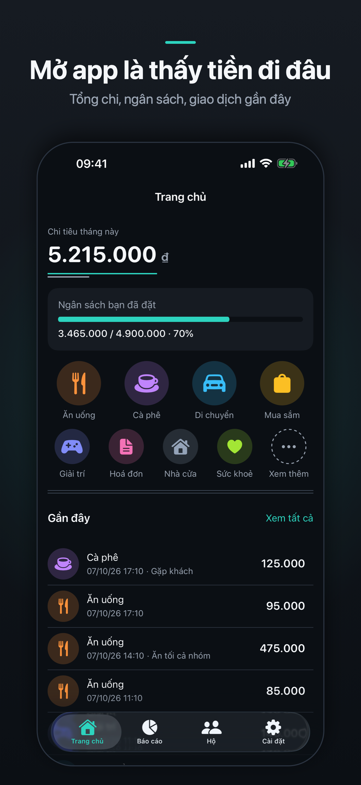
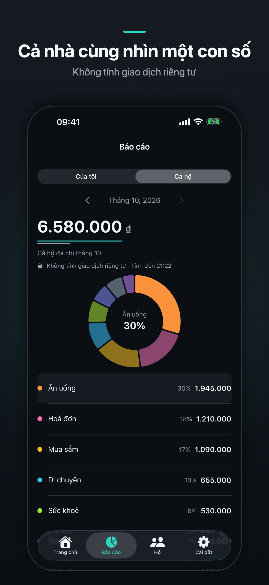
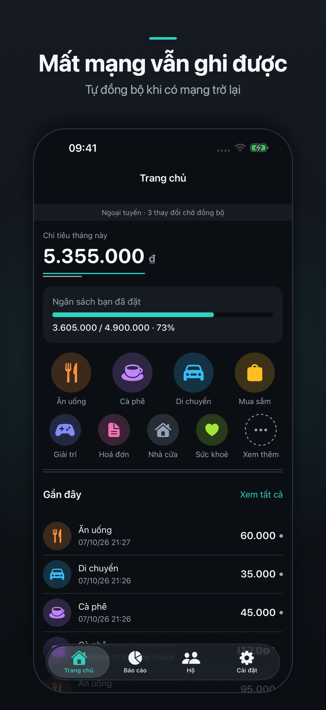

Tiếng Việt
A Money - Quản lý chi tiêu
Ghi chi tiêu trong 3 giây
A Money là sổ chi tiêu tiếng Việt cho iPhone. Mở app, chạm một danh mục, gõ số tiền — xong. Không biểu mẫu dài, không bước thừa.
Tải trên App Store — [CHÈN LINK APP STORE SAU KHI DUYỆT]



Ghi nhanh
- Bàn phím số riêng cho việc nhập tiền, không phải bàn phím hệ thống
- Lưới danh mục ngay trên Trang chủ — chạm là ghi
- Thêm ghi chú và đổi ngày khi cần, bỏ qua khi không cần
Nhìn ra bức tranh
- Trang chủ mở ra là thấy tổng chi tháng này
- Thanh ngân sách thu gọn cho biết đã dùng bao nhiêu phần hạn mức
- Danh sách giao dịch có lọc theo danh mục và chuyển tháng; vuốt để sửa hoặc xoá
Danh mục và ngân sách
- Tạo, sửa, xoá danh mục với 16 biểu tượng và 8 màu
- Khi xoá một danh mục, bạn chọn xoá luôn các giao dịch trong đó hoặc dồn chúng về "Khác"
- Đặt hạn mức cho từng danh mục, theo từng tháng; cảnh báo ngay khi một danh mục vượt ngưỡng
Báo cáo tháng
- Biểu đồ tròn chia theo danh mục, kèm bảng số tiền và phần trăm
- Chạm một danh mục để xem đúng những giao dịch của nó; chuyển qua lại giữa các tháng
Cả nhà cùng nhìn một con số
- Tạo một hộ rồi gửi mã mời cho người nhà, hoặc nhập mã để tham gia hộ đã có
- Màn Báo cáo có thêm chế độ "Cả hộ": tổng chi của cả hộ trong tháng, chia theo danh mục
- Khoản nào muốn giữ cho riêng mình, bật "Riêng tư" khi ghi — thành viên khác không thấy, và báo cáo cả hộ không tính khoản đó
- Chủ hộ đổi tên hộ, tạo mã mời mới, xoá thành viên hoặc giải tán hộ; thành viên có thể rời hộ và giữ nguyên dữ liệu của mình
Giao dịch định kỳ
- Thêm khoản chi lặp lại mỗi tháng như tiền nhà, tiền mạng hay gói đăng ký — chọn ngày trong tháng, app tự ghi vào đúng ngày
- Tháng không có ngày đã chọn thì ghi vào ngày cuối tháng
- Tắt, bật lại hoặc xoá bất cứ lúc nào; các giao dịch đã ghi trước đó giữ nguyên
Nhắc nhở hằng ngày
Bật nhắc ghi chi tiêu và chọn giờ nhắc trong Cài đặt. App chỉ nhắc khi hôm đó bạn chưa ghi gì.
Dùng được khi không có mạng
Dữ liệu nằm trên máy bạn. Ghi, sửa, xoá, đặt hạn mức, xem báo cáo — tất cả chạy bình thường ở chế độ máy bay hay khi mất sóng. Khi mạng trở lại, app tự đồng bộ và luôn cho bạn thấy còn bao nhiêu thay đổi đang chờ.
Đồng bộ nhiều thiết bị
Đăng nhập bằng Apple hoặc Google, cùng một tài khoản trên các máy của bạn, để dùng chung một quyển sổ. Dải trạng thái ở đầu Trang chủ nói rõ app đang đồng bộ, đang ngoại tuyến, hay cần đăng nhập lại.
Đồng bộ, hộ gia đình và giao dịch định kỳ cần tài khoản và kết nối tới máy chủ của A Money.
Riêng tư
Không quảng cáo. Không theo dõi. Không thư viện phân tích của bên thứ ba. Dữ liệu trên máy được iOS bảo vệ, chỉ đọc được khi máy đã mở khoá. Xoá tài khoản ngay trong Cài đặt. Chi tiết: Chính sách bảo mật.
Thông tin
Dành cho iPhone, iOS 17 trở lên. Giao diện tiếng Việt. Đơn vị tiền: VND, số nguyên. Bản này ghi khoản chi; chưa theo dõi thu nhập.
Cần giúp đỡ? Xem trang Hỗ trợ hoặc gửi thư tới amoney.support@gmail.com.
English
A Money - Quản lý chi tiêu
Log an expense in 3 seconds
A Money is a Vietnamese-language expense book for iPhone. Open the app, tap a category, type the amount — done. No long forms, no extra steps. The app is available in Vietnamese only.
Download on the App Store — [CHÈN LINK APP STORE SAU KHI DUYỆT]
Quick logging
- A dedicated number pad for entering amounts, not the system keyboard
- The category grid sits right on the Home screen — tap to log
- Add a note or change the date when you need to, skip it when you don't
See the big picture
- The Home screen opens on this month's total spending
- A compact budget bar shows how much of your limits you have used
- The transaction list filters by category and switches months; swipe to edit or delete
Categories and budgets
- Create, edit and delete categories with 16 icons and 8 colours
- When you delete a category, choose to delete its transactions too or move them to "Khác" (Other)
- Set a limit for each category, month by month; get a warning as soon as a category goes over its threshold
Monthly report
- A donut chart by category, with a table of amounts and percentages
- Tap a category to see exactly its transactions; move back and forth between months
The whole family, one number
- Create a household and send the invite code to your family, or enter a code to join an existing household
- The Report screen gains a "whole household" mode: the household's total spending for the month, by category
- For anything you want to keep to yourself, turn on "Private" when logging — other members don't see it, and the household report doesn't count it
- The owner can rename the household, issue a new invite code, remove members or dissolve the household; members can leave and keep their own data
Recurring transactions
- Add expenses that repeat every month, such as rent, internet or subscriptions — pick a day of the month and the app records it on that day
- In a month without the chosen day, it is recorded on the last day of the month
- Turn off, turn back on or delete at any time; transactions already recorded stay as they are
Daily reminder
Turn on the logging reminder and pick a time in Settings. The app reminds you only on days when you have not logged anything.
Works without a connection
Your data lives on your device. Logging, editing, deleting, setting limits, viewing reports — all work normally in Airplane Mode or with no signal. When the connection returns, the app syncs on its own and always shows you how many changes are still waiting.
Sync across devices
Sign in with Apple or Google, using the same account on each of your devices, to share one expense book. The status strip at the top of the Home screen tells you whether the app is syncing, offline, or needs you to sign in again.
Sync, households and recurring transactions need an account and a connection to the A Money server.
Privacy
No advertising. No tracking. No third-party analytics libraries. Data on the device is protected by iOS and can be read only while the device is unlocked. Delete your account right in Settings. Details: Privacy Policy.
Details
For iPhone, iOS 17 or later. Vietnamese interface. Currency: Vietnamese đồng (VND), whole numbers. This version records expenses; it does not track income yet.
Need help? See the Support page or write to amoney.support@gmail.com.